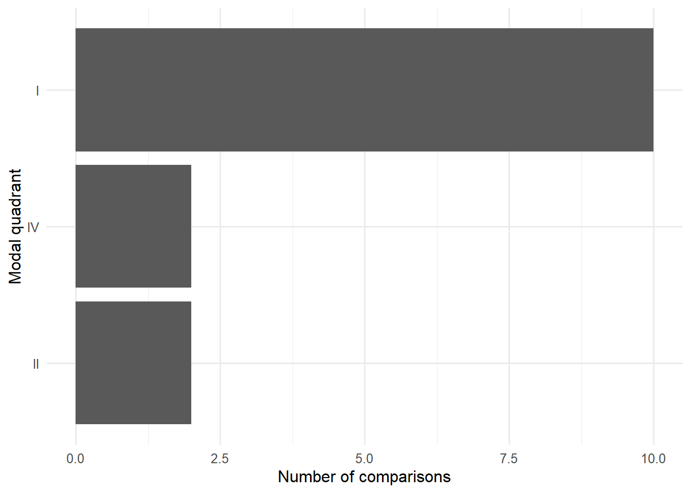
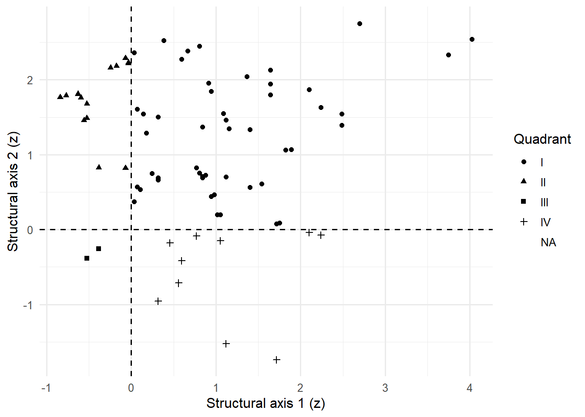

| comparison | modal_quadrant | modal_quadrant_fraction | n_unique_quadrants | high_confidence_fraction | stability_class | median_distance_from_boundary_z |
|---|---|---|---|---|---|---|
| BLAD/TCC | I | 1.000 | 1 | 0.667 | cross-chip/cross-filter stable | 1.067 |
| BR/BRAD | I | 1.000 | 1 | 1.000 | cross-chip/cross-filter stable | 2.101 |
| Brain/GBM | I | 1.000 | 1 | 0.000 | cross-chip/cross-filter stable | 0.509 |
| Brain/MB | I | 0.833 | 2 | 0.000 | majority-stable | 0.648 |
| COL/COADREAD | I | 0.833 | 2 | 0.000 | majority-stable | 0.129 |
| GC/FL | I | 1.000 | 1 | 0.667 | stable among available assignments | 1.366 |
| GC/LBCL | I | 1.000 | 1 | 0.000 | stable among available assignments | 0.595 |
| KID/RCC | IV | 0.833 | 2 | 0.000 | majority-stable | 0.132 |
| LU/LUAD | I | 1.000 | 1 | 1.000 | cross-chip/cross-filter stable | 1.391 |
| PA/PAAD | IV | 0.667 | 2 | 0.333 | unstable | 0.473 |
| PB/B-ALL | II | 0.833 | 2 | 0.000 | majority-stable | 0.333 |
| PB/T-ALL | II | 1.000 | 1 | 0.000 | cross-chip/cross-filter stable | 0.385 |
| PR/PRAD | I | 1.000 | 1 | 0.000 | cross-chip/cross-filter stable | 0.262 |
| UT/EAC | I | 0.833 | 2 | 0.000 | majority-stable | 0.350 |
Quadrant Occupancy Atlas
Dominant Structural Regimes Across Cancer Comparisons
Purpose
The previous chapter demonstrated that many cancer comparisons cluster into recurring structural archetypes. Because archetype assignments are derived from quadrant behavior, the next question is whether common quadrant regimes are visible directly within the underlying structural geometry.
The Quadrant Occupancy Atlas therefore examines the distribution of cancer comparisons across perturbational state space.
Whereas archetypes summarize recurring structural phenotypes, quadrant occupancy reveals the geometric foundation from which those archetypes arise.
Quadrants provide a compact representation of the tumor-reference transition by combining major structural axes into interpretable regimes.
Stable occupancy of a single quadrant suggests a coherent tumor-associated structural direction. Mixed occupancy suggests heterogeneity, boundary proximity, or sensitivity to chip and filter-regime perturbations.
From Archetypes to Structural State Space
Structural archetypes represent higher-order summaries of recurring transcriptomic organization.
Quadrant assignments provide the intermediate layer linking individual structural phenotypes to archetype classification.
Cancer Comparison
↓
Structural Phenotype
↓
Quadrant Assignment
↓
Structural ArchetypeThe present atlas therefore focuses on the quadrant layer itself. By examining quadrant occupancy across all assignments, it becomes possible to determine whether cancers preferentially occupy particular regions of structural state space.
Modal Quadrant by Comparison
The modal quadrant summarizes the dominant structural regime associated with each cancer comparison. Modal quadrant fractions near 1.0 indicate highly consistent assignments across chips and filter regimes, whereas lower values suggest mixed occupancy or proximity to structural boundaries.
Most comparisons exhibit dominant occupancy within a single quadrant, indicating that malignant transcriptomic reorganization is often associated with coherent structural directionality rather than random movement through descriptor space.
Quadrant Frequency

Quadrant I dominates the observed distribution, accounting for the majority of modal assignments across cancer comparisons.
Quadrants II and IV occur less frequently, while Quadrant III is absent from modal assignments.
This pattern is consistent with the Archetype Atlas, where Quadrant I–associated archetypes represented the dominant recurring structural phenotype.
Assignment-Level Quadrant Map

Geometric Structure of Quadrant Occupancy
The assignment-level map reveals the spatial organization underlying quadrant classification.
Each point represents an individual chip/filter assignment positioned within standardized structural descriptor space. Dashed lines indicate the decision boundaries separating quadrants.
Several observations are immediately apparent:
- Quadrant I contains the largest concentration of assignments.
- Quadrant II and Quadrant IV form smaller but recognizable clusters.
- Quadrant III contains relatively few assignments.
- Most assignments remain separated from quadrant boundaries, suggesting that many classifications reflect genuine structural organization rather than boundary artifacts.
The existence of identifiable quadrant clusters supports the interpretation that recurring structural states are present within the broader cancer landscape.
Interpretation and Limitations
Quadrant occupancy should be interpreted as a systems-level organizational classification rather than a molecular taxonomy.
Quadrants summarize coordinated behavior across multiple descriptor domains and therefore capture emergent transcriptomic structure rather than specific biological mechanisms.
A shared quadrant does not imply shared mutations, pathways, cell types, or developmental origins. Instead, it suggests that distinct cancers occupy similar regions of structural state space.
Mixed quadrant occupancy may reflect biological heterogeneity, perturbational sensitivity, incomplete structural convergence, or proximity to state-space boundaries.
Key Observation
The dominant finding of the Quadrant Occupancy Atlas is the strong concentration of cancer comparisons within Quadrant I.
This result mirrors the predominance of Quadrant I–associated archetypes observed in the previous chapter and suggests that many cancers may converge upon a common region of transcriptomic structural state space.
The following atlas extends this analysis by examining how descriptor landscapes vary across these recurring structural regimes.